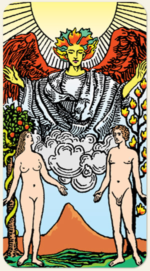

A mulher fala sobre a sensibilidade espiritual, da mesma forma que ela escuta a serpente, ela olha para o ser angelical. O homem fala sobre o dogmatismo, é ele quem está próximo à árvore da vida mas sua atenção está na mulher e não no ser espiritual.
O céu está dividido entre amarelo e azul: razão e emoção. Combinadas com cada naipe: copas é envolvimento afetivo ou emocional, com paus é envolvimento sexual, com espadas é a fase de ficar de papinho, é a lista de contatinhos.
Positivo: Escolher com o coração, ter escolha e poder escolher, estar envolvido sentimentalmente, amor carnal, desejo.
Negativo: Indecisão, paralisia, não levar o fator emocional em conta durante as decisões, fazer por obrigação e não por afinidade, perder o encanto e o prazer, dúvida, falta de caminhos, apatia, indiferença.
Amor e Sexo: Pessoa sedutora, encantadora, de boa lábia, charmosa, envolvente. É um poder de convencimento diferenciado do Papa, aqui é na base do borogodó, relacionamentos com química, se unir com outro em busca de um propósito maior (projetos materiais ou religiosos, família). Negativo: galinha, tem a necessidade da conquista mas, depois que consegue, perde o interesse, pega só pra dizer que pegou, quer pessoas encantadas por ela, joga charme para conseguir regalias ou manipular, ninfomania, satirismo, falta de química, sexo fake, pra chamar a atenção de outros, fingir orgasmo, fazer coisas apenas para se afirmar sexualmente.
Trabalho e Dinheiro: Trabalhar com algo que, na verdade, não gosta (Anteros e Cupido), ser valorizado ou desvalorizado no trabalho devido a aparência física, assédio ou homofobia, áreas que não se casam, que não combinam, fofocas, maledicências e trapaças (olhar para o anjo em vez de olhar para o parceiro), ter uma segunda agenda. Este assunto não é o ponto forte do arcano: pelados, nus, com a mão no bolso. Oportunidade de fazer dinheiro se conseguir boas parcerias, se trabalhar com o que gosta, quando o dinheiro vem pelo cônjuge ou ser cuidada financeiramente por pessoas pelas quais tem afeto.
Espiritualidade: Ter um parceiro espiritualizado ou religioso, ter amigos espirituais, ajuda vinda pelas mãos de alguém quando você precisa, anjo da guarda, más companhias trazidas por seres espirituais de baixa vibração, seres atacando o parceiro em algo que afeta o cônjuge, ouvir a intuição, ter atenção às trocas energéticas na área sexual. Intervenções que possuem a intenção de atingir a pessoa na área de relacionamento.
Símbolos: Anjo, Sol, Casal, Árvore da Vida, Árvore do Conhecimento, Serpente, Fogo, Nuvens, Montanha, Nudez.
Cores: Amarelo, Vermelho, Verde, Azul, Cinza, Roxo e Marrom.
Elementos: Ar e Espírito.